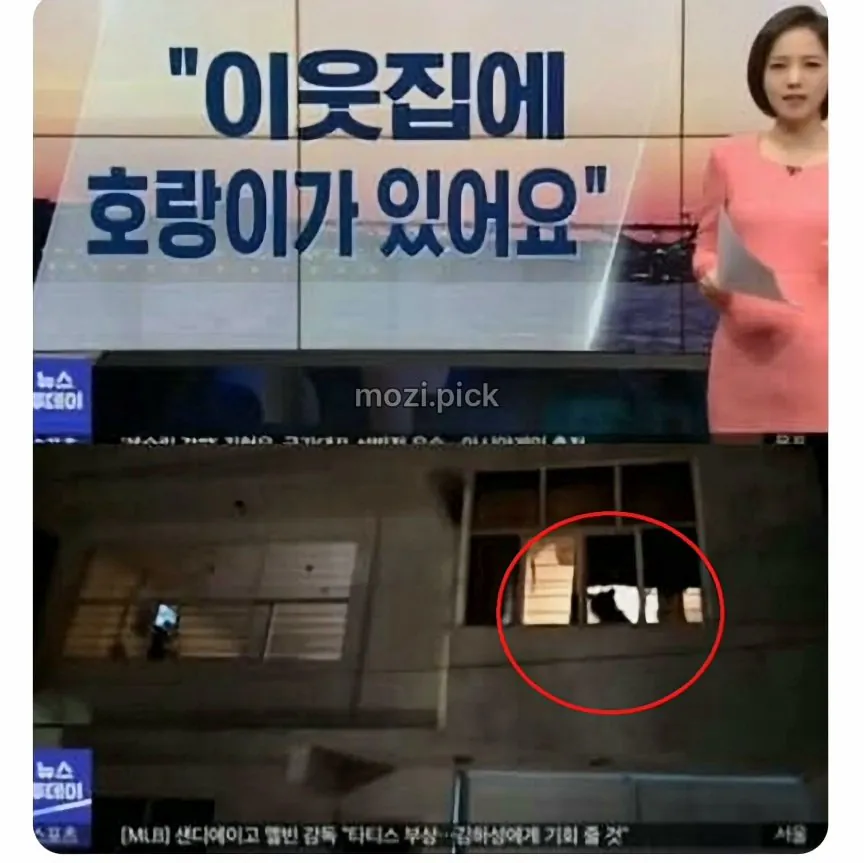
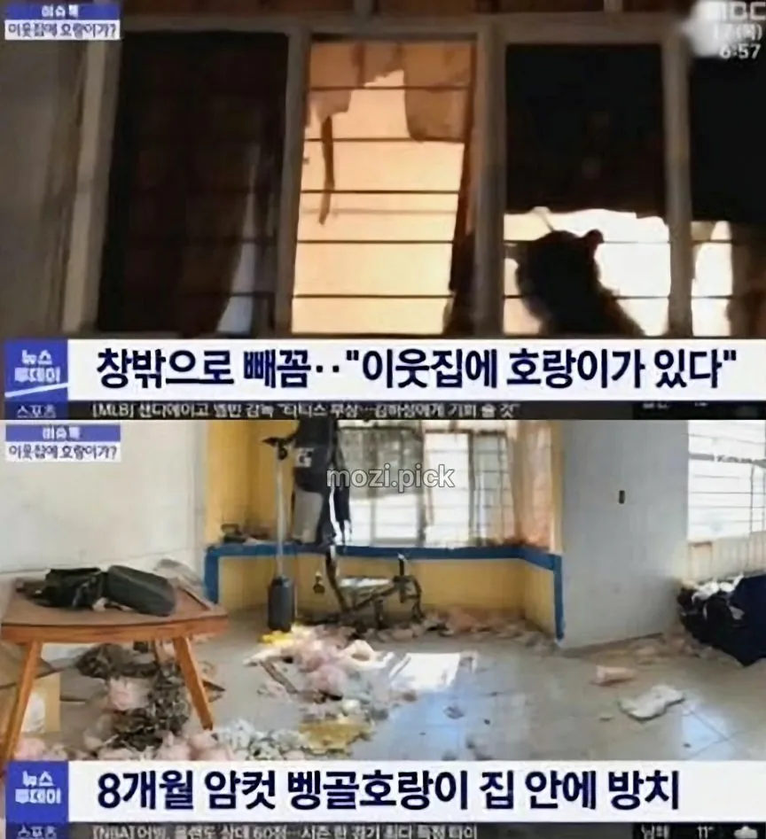
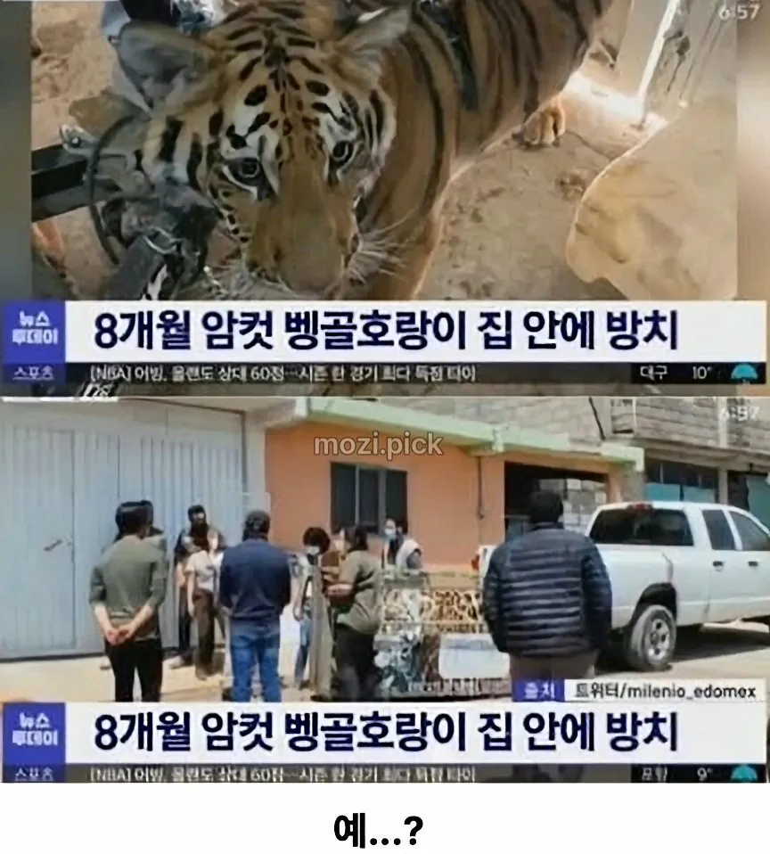

102 · 30 · 9 시간 전 · 원문
  



수집 당시 댓글 30개
까모 · 14 시간 전
쥐드립넷 · 14 시간 전
Junkers · 11 시간 전
이왜진???
파랑1 · 10 시간 전
↳ 답글 · 빈찬합 · 54 분 전
ㅋㅋㅋㅋㅋㅋㅋㅋㅋㅋㅋㅋㅋ
씨벌지식정보방 · 10 시간 전
숨고르는중인청년 · 10 시간 전
눈썰미 지리네
출근은9시 · 10 시간 전
장난전화하면 혼나요
나니와의하얀번개 · 10 시간 전
아오 또 헛소리하네 ㅋㅋㅋ 싶었는데 이왜진?
小熊習近平 · 10 시간 전
↳ 답글 · 예수보지 · 9 시간 전
씹덕 같이 생겼네 ㅋㅋ
↳ 답글 · 게이야 · 8 시간 전
오레오 오 · 10 시간 전
5타니의4타9니 · 10 시간 전
no혐오 · 10 시간 전
자몽에이드 · 10 시간 전
신다린 · 9 시간 전
암컷
랑군 · 9 시간 전
이상하면치과가야지 · 9 시간 전
출동한 사람도 깜놀 했을거 같은데아니 뭔 장난전화야 하고 갔울듯
동그란네모 · 8 시간 전
예?
도덕놈 · 7 시간 전
잡고싶은허리 · 6 시간 전
하 씨 호들갑은ㅉㅉ 얼른 확인만 하고 나오자 벌컥!
유리무릎 · 4 시간 전
정기사물손 · 3 시간 전
고양이가 아니라 진짜였누ㅋㅋㅋ
닌닌이다 · 2 시간 전
아니 왜 진짜누 ㅋㅋㅋ
왜그러냐진짜로 · 1 시간 전
집안을 족쳐놨네
X박스패드 · 1 시간 전
이게 왜 진짜냐고 ㅋㅋㅋ
charlote · 1 시간 전
그림자만 보고 신고한것도 대단하네
싸이버거를 · 1 시간 전
Fatcat · 8 분 전
댓글
수집 당시 댓글 30개
까모 · 14 시간 전
쥐드립넷 · 14 시간 전
Junkers · 11 시간 전
이왜진???
파랑1 · 10 시간 전
· 빈찬합 · 54 분 전
ㅋㅋㅋㅋㅋㅋㅋㅋㅋㅋㅋㅋㅋ
씨벌지식정보방 · 10 시간 전
숨고르는중인청년 · 10 시간 전
눈썰미 지리네
출근은9시 · 10 시간 전
장난전화하면 혼나요
나니와의하얀번개 · 10 시간 전
아오 또 헛소리하네 ㅋㅋㅋ 싶었는데 이왜진?
小熊習近平 · 10 시간 전
· 예수보지 · 9 시간 전
씹덕 같이 생겼네 ㅋㅋ
· 게이야 · 8 시간 전
오레오 오 · 10 시간 전
5타니의4타9니 · 10 시간 전
no혐오 · 10 시간 전
자몽에이드 · 10 시간 전
신다린 · 9 시간 전
암컷
랑군 · 9 시간 전
이상하면치과가야지 · 9 시간 전
출동한 사람도 깜놀 했을거 같은데
아니 뭔 장난전화야 하고 갔울듯
동그란네모 · 8 시간 전
예?
도덕놈 · 7 시간 전
잡고싶은허리 · 6 시간 전
하 씨 호들갑은ㅉㅉ 얼른 확인만 하고 나오자 벌컥!
유리무릎 · 4 시간 전
정기사물손 · 3 시간 전
고양이가 아니라 진짜였누ㅋㅋㅋ
닌닌이다 · 2 시간 전
아니 왜 진짜누 ㅋㅋㅋ
왜그러냐진짜로 · 1 시간 전
집안을 족쳐놨네
X박스패드 · 1 시간 전
이게 왜 진짜냐고 ㅋㅋㅋ
charlote · 1 시간 전
그림자만 보고 신고한것도 대단하네
싸이버거를 · 1 시간 전
Fatcat · 8 분 전